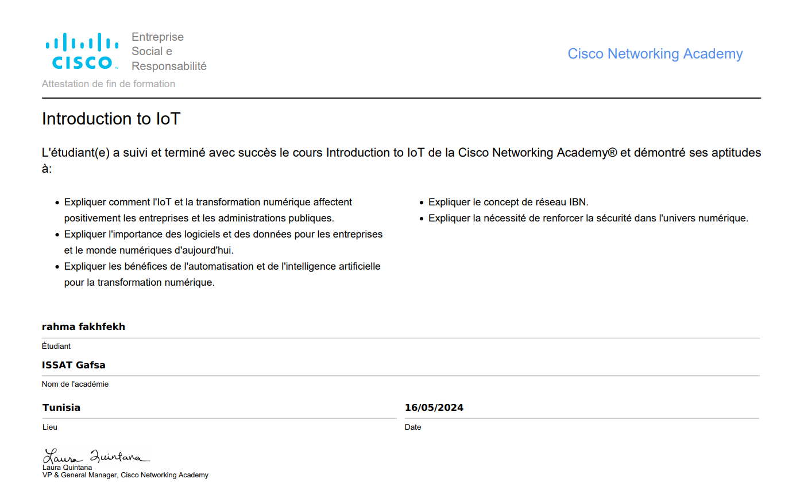

Détails de la Certification

Introduction to IoT
Institution : Certifying Institute
Date d'obtention : Mai, 2024
Description
Cette certification couvre les principes fondamentaux de l'Internet des objets, y compris les technologies, les protocoles et les applications dans le monde réel. Les participants apprendront à concevoir et à implémenter des solutions IoT innovantes.
Compétences Acquises
- Compréhension des concepts IoT
- Capacité à travailler avec des capteurs et des dispositifs
- Analyse de données provenant d'appareils IoT